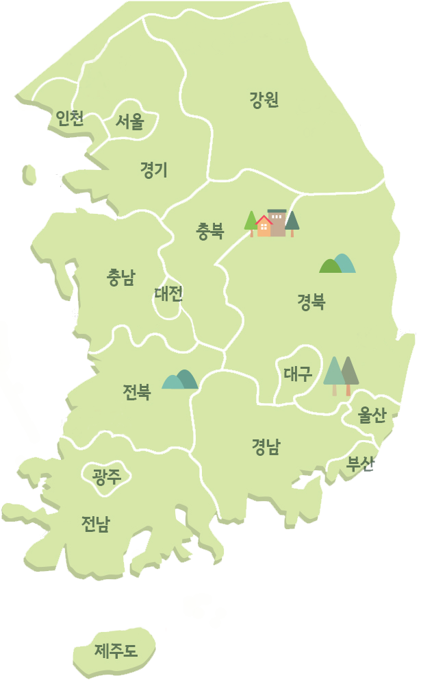
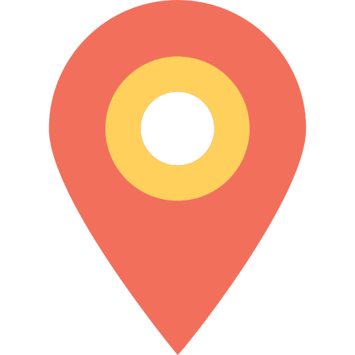

명품 자전거길
지자체 명품 자전거길은 전국 곳곳에 거미줄처럼 얽혀있는 지자체가 조성한 자전거길 중에서 여행전문작가, 동호인, 잡지사 기자 등이 참여하여 엄선한 전국 10곳의 명품 자전거길 입니다.


북한강과 의암호수변의 경치도 장관이지만, 국내 최장의 호수조망시설인
소양강 스카이워크와 의암스카이워크가 단연손꼽힌다. 바퀴 사이로 투명한
유리를 통해 내려다 보이는 수면은마치 호수위를 걷는 듯한 스릴과 감동을
느끼게 해 준다. 또한 모든 연령대를 위한 다양한 문화 및 레저 시설들이
마련돼있어 여행의 종합 선물세트같은 코스이다.
감상포인트 : 의암스카이워크, 소양강
여행 TIP : 소양스카이워크, 춘천인형극장, 애니메이션박물관
먹거리 : 닭갈비 , 막국수

임진각, 반구정, 화석정 등 지역의 주요관광지와 연계돼 있는 DMZ
자전거길은 임진강을 따라 주변 농촌의 들판과 야산이 끝없이
펼쳐져 있다. 이곳의 유일한 섬 초평도에는 각종 야생화는 물론
희귀조류인 말똥가리 등이 서식하고 있는 곳으로 장산전망대를
이용하면 오염되지 않은 생태계의 중요한 가치를 한눈에 내려다 볼
수 있다. 자전거 쉼터 및 보관소 등이 곳곳에 마련되어 라이더들의
편의를 돕는다.
감상포인트 : DMZ 평화누리길, 초평도
여행 TIP : 임진강, 화석정
먹거리 : 장어, 참게매운탕, 두부요리